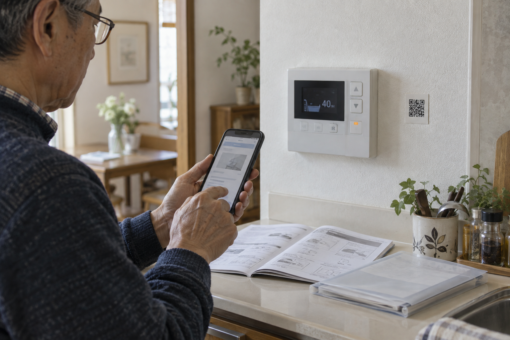
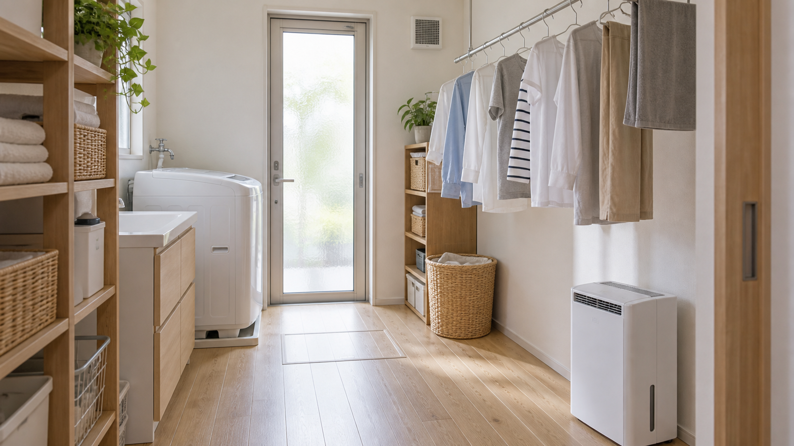
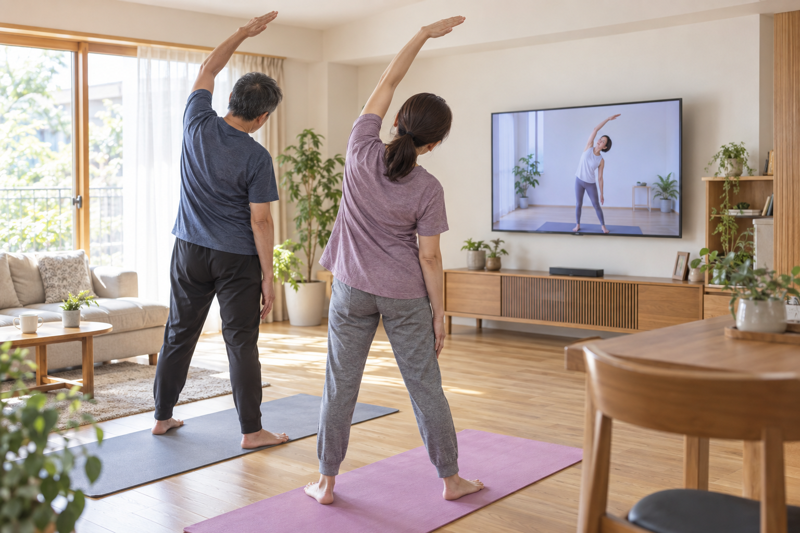
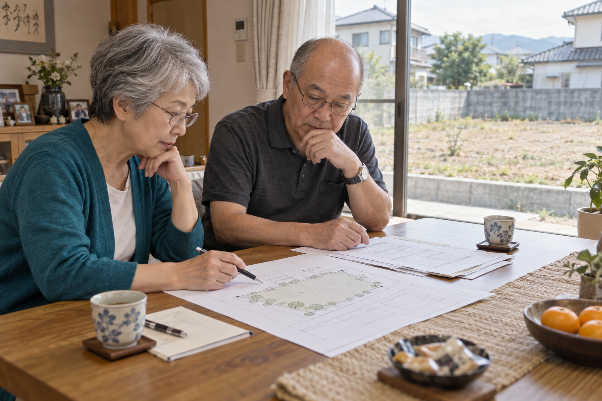

COLUMN SERIES
暮らしのアドバイザー特別編集ちょっと深い住まいの話
家は「建てる・住む」だけでなく、「畳む」時も来ます。住まいの価値観から、片づけ、家族構成の変化、実家じまい、防災まで――実家の工務店・不動産に10年従事し、いまは教育の現場にも立つ筆者エイスケが、暮らす人の目線でお届けします。
1986年生まれ。実家の工務店・不動産に10年間従事したのち、教育の世界へ。住宅と教育、両方の視点から「豊かな暮らし」をテーマに執筆します。
制作確認用B｜今回の納品対象10本と、過去の連載を同じ形式で確認できます。
40件を表示
今回の納品対象｜第31〜40回

水道の使用量が増えたら
公開日：
検針票の使用量を検針期間・人数・使い方でそろえて比べ、水漏れが疑われるときの連絡先と、節水型便器・水栓など設備の更新を考える際の比較項目を整理します。

住み替えかリフォームか
公開日：
通院・買い物・家族との距離、建物の状態、工事中の暮らし、維持の手間と費用を、今の家と住み替え先で同じ条件にそろえて比べる判断シートです。

明るいのに見えにくい部屋
公開日：
明るさだけでなく、光源の見え方、反射、手元の影、家具と照明の位置関係を、時間帯や作業ごとに記録し、照明の位置・向き・手元灯・調光を比べる手順を整理します。

マンションの修繕計画と積立金、どこを読む？
公開日：
長期修繕計画の工事内容・実施時期と、修繕積立金の状況を管理組合の資料で確かめ、自宅の専有部の改修予定と照らし合わせる読み方を整理します。

換気口、ふさいでいませんか？
公開日：
給気口と排気口の位置、フィルターと取扱説明書、日常の手入れでできる範囲を確かめ、家具などで空気の通り道をふさいでいないかを点検する手順を整理します。換気経路の記入表つきです。

冬の停電、暖房が止まったら
公開日：
冬に停電すると使えなくなる暖房・給湯・連絡手段を確かめ、家の中で暖を保つ工夫、暖かい場所への移動、復旧時の安全確認を、家族で確認できる形に整理します。

実家をしばらく空けるとき
公開日：
実家に誰も住まない期間の、空ける前・留守中・戻る前の確認を、連絡先・鍵・郵便物・通水・換気・見回りに分けて、家族で分担する表にまとめます。

窓の結露、換気だけでいい？
公開日：
朝の窓の結露について、室温・湿度・場所の記録から、日々の使い方、窓や断熱の相談までの順序を整理します。温湿度の記録表つきです。

住宅ローンの金利通知、どこを見る？
公開日：
金利の通知に書かれた適用金利・適用日・返済額・元金と利息の見方、契約ごとの違い、修繕費を含む支出の確かめ方を整理します。金融機関への質問メモつきです。

冬の浴室と脱衣室を暖かく
公開日：
冬の入浴前後に家の中で感じる温度差を、室温の確認、浴室暖房乾燥機、脱衣室の暖房、窓の断熱の役割から整理します。入浴中の事故に関する注意点は消費者庁の情報にもとづきます。
納品済み・本番掲載前｜第24〜30回
スマートホームは、もう身近｜親の見守りと留守の確認から始める
公開日：
離れて暮らす親の見守りや不在時の確認に、住宅の機器をどう役立てるか。通知後の連絡、本人の同意、通信や電源が使えない時の備えまで考えます。

家の取扱説明書を、使える記録に｜修繕履歴・QR・AIで迷わない住まい
公開日：
引き渡し時の説明書・保証書・修繕記録を探して整理。給湯器などの取扱説明書をQRコードで開く工夫や、AIで必要な資料を探す方法を紹介します。
物価が気になる今、50代からの住まいにどうお金を使う？
公開日：
家計の中で住まいの予算をどう配分するか。生活費を確かめ、急な修繕と設備更新、楽しみのための改修に分けて備え、やりたい時に動ける準備を考えます。

室内干しが乾かない家を変える｜浴室暖房乾燥機・衣類乾燥機と「洗う・干す・しまう」の短い動線
公開日：
乾燥機の使い分けから、浴室暖房乾燥機・室内物干し金物・換気と収納まで。身近な道具も試しながら、洗濯物を運ぶ負担を減らす間取りを図で考えます。
子どもに「家を買いたい」と言われたら｜親が一緒に確かめたいこと
公開日：
子どもの住宅購入を、親はどう支えるか。購入後の家計、中古住宅の改修費、親の援助と贈与税の条件を、本人の希望と一緒に確かめます。

50代からの趣味を楽しむ住まい｜道具・音・収納から考える小さな改修
公開日：
趣味の準備や片づけを楽にする机と収納、音への配慮を具体化。家具で試す工夫から住宅部品の改修まで、夫婦それぞれの楽しみを支える住まいを考えます。

土地活用、わが家ならどう選ぶ？｜駐車場・賃貸・売却を比べる
公開日：
受け継いだ土地や使っていない土地には、駐車場、賃貸住宅、土地貸し、売却などの選択肢があります。収入だけでなく、初期費用、管理の手間、将来の使い方から自分たちに合う方法を考えます。
公開済みの回｜第1〜23回

50代からのバリアフリー｜親の介護に備える手すり・段差・夜の明かり
公開日：2026年11月5日
必要になって慌てる前に、本人の動作に合う手すりや通路を確認。小さな段差、設置後の失敗、照明、介護保険の住宅改修まで具体的に考えます。

家の点検は1年目から｜築年数ごとの確認ポイントと保証の見直し
公開日：2026年10月29日
戸建てとマンションの点検項目を年数別に整理。屋根・外壁・窓・給湯器の変化を記録し、保証期限前の相談と将来の修繕計画につなげます。

リフォームの見積もり、どこで差がつく？｜プロが大切にする、完成後には見えない仕事
公開日：2026年10月27日
養生、下地の確認、隠れる部分の記録。浴室交換を例に、良い見積もりと悪い見積もりの違いを考えます。

その子の「安心ゾーン」は、家につくれる──発達特性のある子どもと家族を支える住まい
公開日：2026年10月22日
発達特性のある子どもが安心できる「安心ゾーン」を家につくる考え方を紹介。音・光・物の整え方と、家族で支える視点を解説します。

家族が集まる場所は、リビングだけじゃない。成長に合わせて「つながり方」を変えられる家へ
公開日：2026年10月20日
家族が集まる場所は、子育て期・思春期・独立後で変わります。リビングに限らない「つながり方」の変化と、既存の家の使い直し方を考えます。

地震直後、6避難所の調査で多かった困りごとはトイレ
公開日：2026年10月15日
2016年の熊本地震後に6避難所101人を対象とした調査では、不便に思ったことの最多がトイレでした。携帯トイレの備蓄量の目安と、今日からできる備え方を解説します。

住まいの悩みを生成AIで整理する──入力と得られる結果がわかる4つの使い方
公開日：2026年10月13日
家族の困りごと、間取り・家具配置、設備・見積もりの質問、家族会議の論点を、生成AIへ何と入力し何を得るかまで具体的に紹介します。

実家じまいは、空っぽにすることじゃない──家族の記憶と、家の次の使い方を整える
公開日：2026年10月8日
実家じまいは「空っぽにする」ことではありません。家・物・思い出をどう引き継ぐか、住み継ぐ・賃貸・民泊・売却の選択肢を整理します。

家を持つ人のための相続の常識──「うちは大丈夫」と思う前に
公開日：2026年10月6日
家庭裁判所で扱われた遺産分割事件には、遺産価額5,000万円以下の事案も含まれます。持ち家の引き継ぎを元気なうちに考える基本を整理します。

住まいの「音」を負担に感じたら。家族で整える音環境のポイント
公開日：2026年10月1日
家の音を負担に感じるとき、発生源や伝わる経路を整理することが対策の入口になります。減らしたい音と残したい気配を分けて考えます。

円安で、家はどう変わる？──住まいのコストと、これからできる備え
公開日：2026年9月29日
円安は住まいの建築費・リフォーム費・光熱費にどう影響するのか。木材の輸入依存という構造から、慌てず備える方法を解説します。

住宅ローンの変動金利が1％違うと、家計はどう変わる？
公開日：2026年9月24日
住宅ローンの変動金利1％の差を試算し、5年ルール・125％ルールの有無を含めて契約条件を確認するポイントを解説します。

50代人口の約3割に達するNISA口座。住宅ローンが残るなら、何を優先する？
公開日：2026年9月17日
身近なお金のテーマとなっているNISA口座と住宅ローン・修繕費との優先順位を考えます。

子どもが巣立ったあと、家はどう変える？──50代から考える夫婦の居場所
公開日：2026年9月15日
子どもの独立後、夫婦の暮らしに家をどう合わせるか。寝室を分ける選択肢や、それぞれの居場所と共用空間の両立の考え方を紹介します。

台風の前に、家族で決めておくこと。家の外・中・避難の備え
公開日：2026年9月10日
家の外・中・避難を分け、台風の前に家族で備えます。

電気代が高く感じられる理由。窓と家電から始める節電
公開日：2026年9月8日
電気代の背景と、窓・家電から始める現実的な節電を考えます。

リフォームで失敗しないために。見積もりと業者選びの基本
公開日：2026年9月3日
見積もりの内訳を読み、信頼できる事業者を選ぶ基本です。

「夏をむねとすべし」は今も正解？一年を通じて快適な家
公開日：2026年9月1日
年間の断熱・気密と夏の日射対策を組み合わせます。

マンションの老いにどう備えるか。長く暮らすための住まいの条件
公開日：2026年8月27日
建物と管理の両面から、マンションに長く暮らす条件を確かめます。

実家じまいは、親が元気なうちに。家族で考えるこれからの住まい
公開日：2026年8月25日
実家のこれからを、親が元気なうちに家族で話し始めます。

家族の気配が通う家。子どもと暮らす住まいの考え方
公開日：2026年8月20日
家族の気配が通う間取りと、子どもの育ちを支える住まいを考えます。

片づかないのは、あなたのせいじゃない。収納と動線で変わる家
公開日：2026年8月18日
収納量だけでなく、使う場所と戻す動線から片づく仕組みを考えます。

家は資産か、負債か。暮らしから考える住まいの価値
公開日：2026年8月10日
「よりよい住まいを」本当に価値ある家とは。連載の総論です。
該当する記事がありません。検索語を変えてください。